Chronologie du procès
Onze ans, 75 pièces
De la location-gérance d’Antibes (1987) à l’arrêt de la Cour de cassation (2002) — tout le dossier, dans l’ordre du procès.
Les 85 pièces
Nettoyées, océrisées, datées. Chaque pièce s'ouvre en ligne dans le lecteur.
Décisions
9 piècesJugements, arrêts et ordonnances.
Conclusions
20 piècesConclusions, mémoires, dires et assignations des parties.
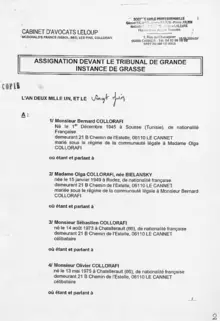
20/06/2001 ›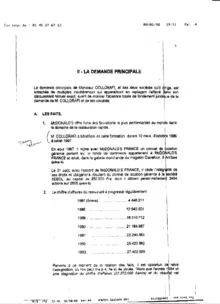
15/01/1998 ›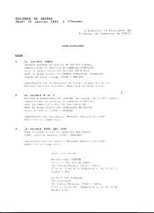
15/01/1998 ›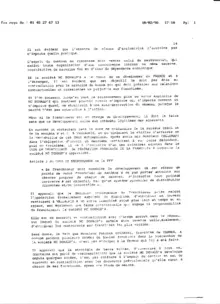
09/02/1998 ›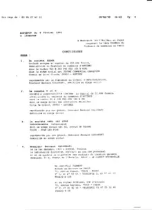
09/02/1998 ›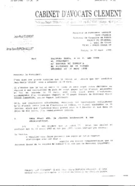
16/03/1998 ›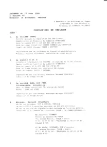
16/03/1998 ›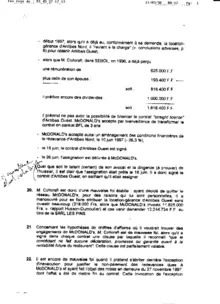
16/03/1998 ›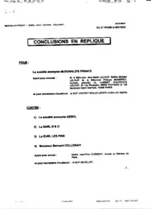
16/03/1998 ›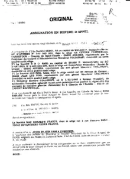
29/05/1998 ›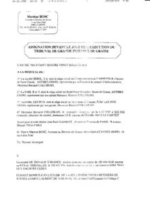
09/06/1998 › 09/06/1998
›
09/06/1998
›
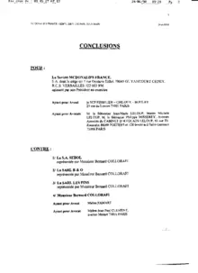
25/06/1998 › 25/06/1998
›
25/06/1998
›
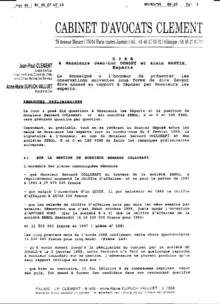
04/03/1999 ›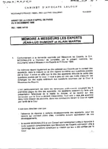
16/04/1999 ›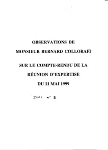
16/06/1999 ›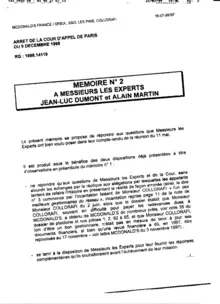
16/07/1999 ›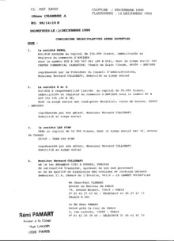
14/12/1999 ›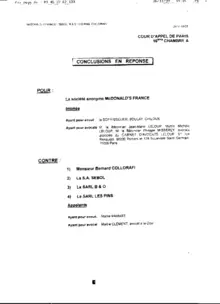
14/12/1999 ›Expertises
5 piècesExpertise judiciaire et rapports.
Correspondances
21 piècesLettres recommandées entre Collorafi, McDonald's et les avocats.
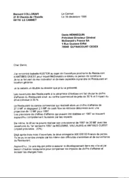
16/12/1996 ›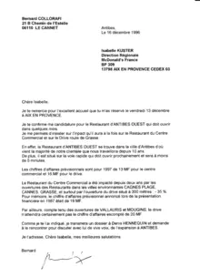
16/12/1996 ›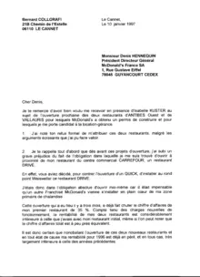
10/01/1997 ›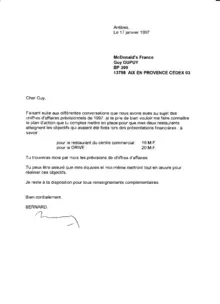
17/01/1997 ›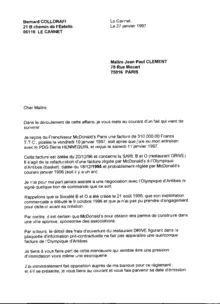
27/01/1997 ›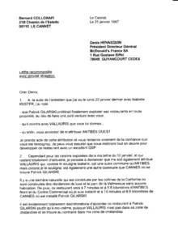
31/01/1997 ›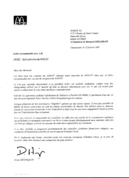
12/02/1997 ›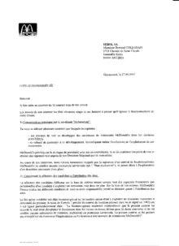
27/03/1997 ›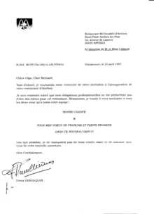
25/04/1997 ›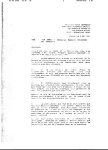
05/05/1997 ›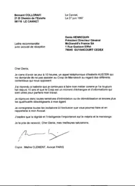
27/06/1997 ›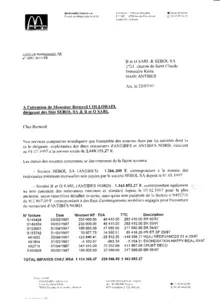
22/07/1997 ›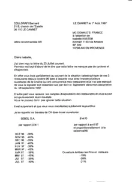
01/08/1997 ›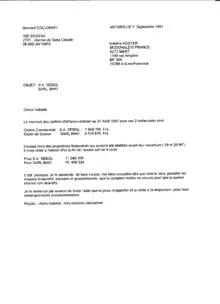
01/09/1997 ›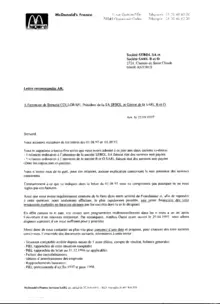
22/09/1997 ›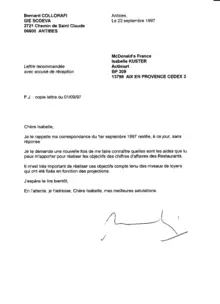
23/09/1997 ›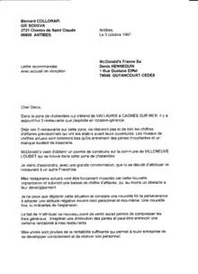
03/10/1997 ›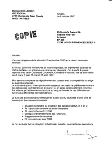
09/10/1997 › 20/10/1997 › 02/02/2002 › 03/02/2002 ›Cassation & CEDH
11 piècesPourvoi, requêtes, délibérés et états des créances.
Presse
9 piècesLa couverture presse de l'affaire.